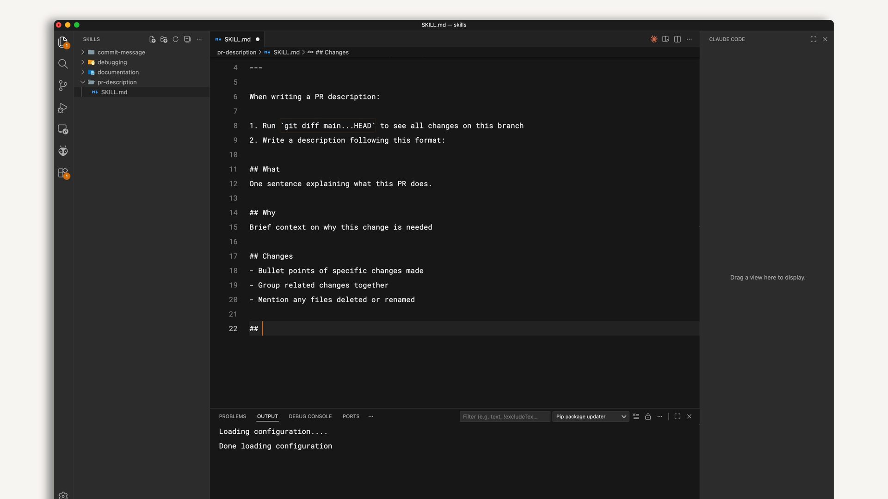
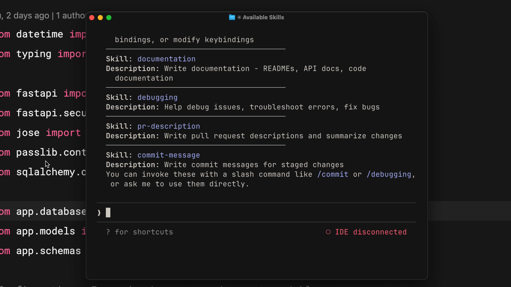
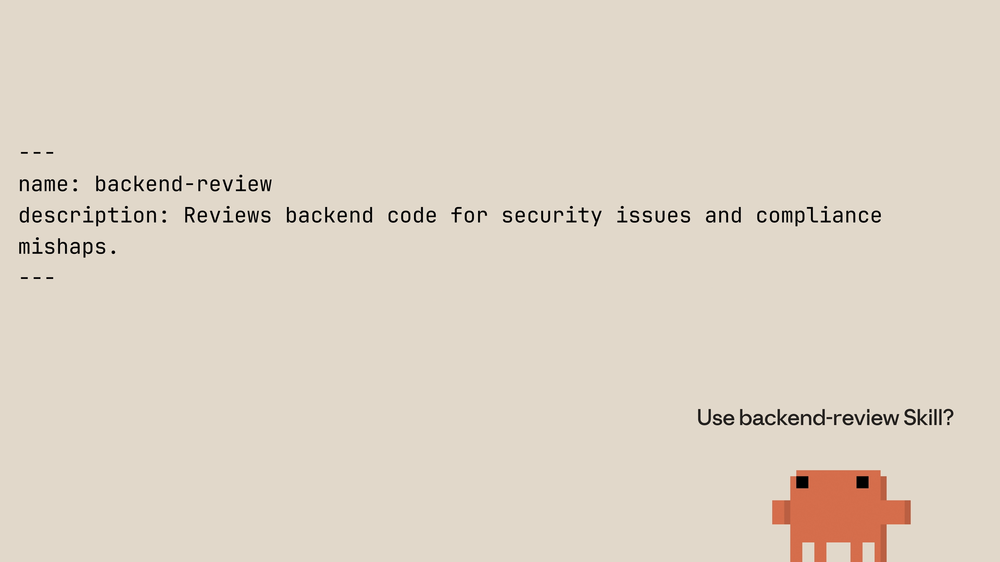

학습 내용
예상 소요 시간: 20분
이 강의를 마치면 다음을 할 수 있습니다:
- 올바른 프론트매터 구조로 스킬을 처음부터 만들기
- 스킬이 Claude Code에서 올바르게 로드되는지 테스트하고 검증하기
- Claude Code가 들어오는 요청을 사용 가능한 스킬과 어떻게 매칭하는지 설명하기
- 스킬 우선순위 계층 구조 설명하기 (Enterprise, Personal, Project, Plugins)
첫 번째 스킬 만들기
(4분)
이 영상은 처음부터 스킬을 만드는 과정을 단계별로 보여줍니다 — 모든 프로젝트에서 사용할 수 있는 개인 PR 설명 스킬입니다. SKILL.md 파일을 어떻게 구성하고 테스트하며, Claude Code가 스킬을 어떻게 발견하고 요청에 매칭하는지 정확히 확인할 수 있습니다. 또한 이름 충돌 시 어떤 스킬이 우선하는지 결정하는 우선순위 계층 구조도 다룹니다.
핵심 정리
-
스킬은 프론트매터에 메타데이터(이름, 설명)가 있고 그 아래 지침이 있는
SKILL.md파일을 포함하는 디렉토리입니다 - Claude는 시작 시 스킬 이름과 설명만 로드하고, 시맨틱 매칭을 사용해 들어오는 요청을 해당 설명과 비교합니다
- Claude가 전체 스킬 내용을 컨텍스트에 로드하기 전에 확인 프롬프트가 표시됩니다
- 이름 충돌 시 우선순위: Enterprise → Personal → Project → Plugins
-
스킬을 업데이트하려면
SKILL.md를 편집하세요. 제거하려면 해당 디렉토리를 삭제하세요. 변경 사항을 적용하려면 항상 Claude Code를 재시작하세요
처음부터 스킬을 만드는 과정을 살펴보고, 그 다음 Claude Code가 실제로 어떻게 스킬을 로드하고 매칭하는지 알아보겠습니다.
스킬 만들기
일관된 형식으로 PR 설명을 작성하는 방법을 Claude에게 가르치는 개인 스킬을 만들겠습니다. 개인 스킬이므로 홈 디렉토리에 위치하며 모든 프로젝트에서 사용할 수 있습니다.
먼저 skills 폴더 안에 스킬을 위한 디렉토리를 만드세요. 디렉토리 이름은 스킬 이름과 일치해야 합니다:
mkdir -p ~/.claude/skills/pr-description
그런 다음 해당 디렉토리 안에 SKILL.md 파일을 만드세요. 파일은 프론트매터 구분선으로 나뉜 두 부분으로 구성됩니다:
---
name: pr-description
description: Writes pull request descriptions. Use when creating a PR, writing a PR, or when the user asks to summarize changes for a pull request.
---
When writing a PR description:
1. Run `git diff main...HEAD` to see all changes on this branch
2. Write a description following this format:
## What
One sentence explaining what this PR does.
## Why
Brief context on why this change is needed
## Changes
- Bullet points of specific changes made
- Group related changes together
- Mention any files deleted or renamedname은 스킬을 식별합니다. description은 Claude에게 언제 이 스킬을 사용할지 알려줍니다 — 이것이 매칭 기준입니다. 두 번째 구분선 이후의 모든 내용은 스킬이 활성화되었을 때 Claude가 따르는 지침입니다.

스킬 테스트하기
Claude Code는 시작 시 스킬을 로드하므로, 스킬을 만든 후 세션을 재시작하세요. 사용 가능한 스킬 목록을 확인하여 스킬이 등록되었는지 검증할 수 있습니다.

목록에 스킬이 표시되어야 합니다. 테스트하려면 브랜치에서 변경 사항을 만들고 "내 변경 사항에 대한 PR 설명을 작성해줘"와 같이 말하세요. Claude는 PR 설명 스킬을 사용하고 있음을 알리고, 변경 내용을 확인한 후 템플릿에 따라 설명을 작성합니다 — 매번 동일한 형식으로.
스킬 매칭 작동 방식
Claude Code가 시작될 때 네 곳에서 스킬을 스캔하지만 전체 내용이 아닌 이름과 설명만 로드합니다. 이것은 중요한 세부 사항입니다.
요청을 보내면 Claude는 메시지를 사용 가능한 모든 스킬의 설명과 비교합니다. 예를 들어, "이 함수가 무엇을 하는지 설명해줘"는 "시각적 다이어그램으로 코드 설명"이라고 설명된 스킬과 매칭될 수 있습니다. 의도가 겹치기 때문입니다.
매칭이 발견되면 Claude는 스킬 로드를 확인해 달라고 요청합니다. 이 확인 단계를 통해 Claude가 어떤 컨텍스트를 가져오는지 인식할 수 있습니다. 확인 후 Claude는 완전한 SKILL.md 파일을 읽고 지침을 따릅니다.

스킬 우선순위
개인 스킬과 같은 이름의 스킬이 있는 저장소를 클론하면 어떤 것이 우선할까요? 명확한 우선순위가 있습니다:
- Enterprise — 관리 설정, 최고 우선순위
-
Personal — 홈 디렉토리 (
~/.claude/skills) -
Project — 저장소 내부의
.claude/skills디렉토리 - Plugins — 설치된 플러그인, 최저 우선순위
이를 통해 조직은 엔터프라이즈 스킬로 표준을 적용하면서도 개인 맞춤화를 허용할 수 있습니다. 회사에 엔터프라이즈 "code-review" 스킬이 있고 같은 이름의 개인 "code-review" 스킬을 만들면, 엔터프라이즈 버전이 우선합니다.
충돌을 방지하려면 설명적인 이름을 사용하세요. "review" 대신 "frontend-review" 또는 "backend-review"와 같은 이름을 사용하세요.
스킬 업데이트 및 제거
스킬을 업데이트하려면 SKILL.md 파일을 편집하세요. 제거하려면 해당 디렉토리를 삭제하세요. 변경 사항을 적용하려면 Claude Code를 재시작하세요.
강의 돌아보기
- 지금 당장 스킬로 만들 수 있는 일상 워크플로우의 작업은 무엇인가요? 설명은 어떻게 작성할 것인가요?
- 우선순위 계층 구조가 팀의 스킬 관리 전략에 어떤 영향을 미칠 수 있을까요? 개인 스킬과 프로젝트 수준 스킬 중 어느 것에 더 의존하시겠습니까?
다음 단계
다음 강의에서는 메타데이터 필드, allowed-tools를 사용한 도구 제한, 점진적 공개와 다중 파일 구성을 통해 더 큰 스킬을 구조화하는 방법 등 고급 구성 옵션에 대해 학습합니다.
피드백
강좌를 진행하면서 스킬을 어떻게 활용하고 계신지, 그리고 피드백이 있으시면 알려주세요. 여기에서 피드백을 공유해 주세요.